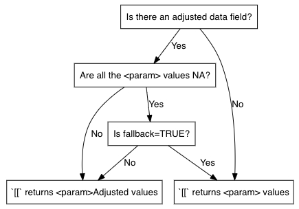
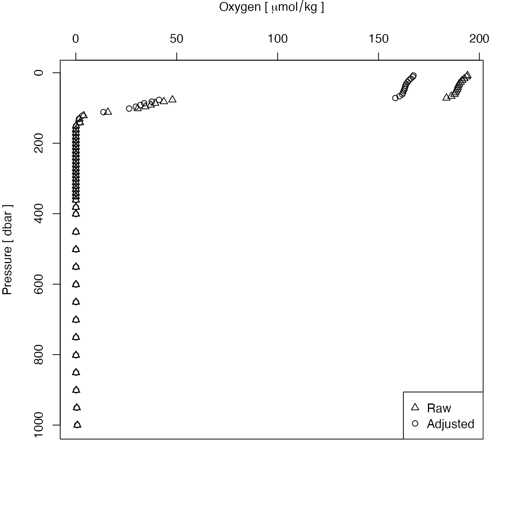

This function returns a version of x for which the enclosed
oce::argo objects are modified in a way that makes
future uses of [[,argoFloats-method
return the adjusted data, not the original data.
NOTE: For this to work, the version 1.3.0 or greater
of oce must be installed, and, as of September 2020,
that means that the user will need to install oce from
github.com/dankelley/oce, not from CRAN.
useAdjusted(argo, which = "all", fallback = TRUE, debug = 0)
| argo | an |
|---|---|
| which | a character vector (passed directly to
|
| fallback | a logical value (passed directly to
|
| debug | an integer that, if positive, indicates that some debugging information should be printed. |
If the version of oce is lower than 1.3.0, useAdjusted()
reports an error. Otherwise, it carries out its work by
applying preferAdjusted() from the oce to each
of the Argo objects stored within the data slot of x.
Although one might guess that adjusted data
are always be preferable to original data, this is not always
the case. Indeed, it is common for the adjusted data to consist
entirely of NA values. A careful analyst should study both
data streams, and should also read the processing notes
for any float (or float cycle) that is of particular interest.
See Reference 1 for more information on the process of
adding adjusted data to Argo files.

Carval, Thierry, Bob Keeley, Yasushi Takatsuki, Takashi Yoshida, Stephen Loch Loch, Claudia Schmid, and Roger Goldsmith. Argo User’s Manual V3.3. Ifremer, 2019. https://doi.org/10.13155/29825.
Dan Kelley and Jaimie Harbin
library(argoFloats) # Note that useAdjusted() requires oce version to be 1.3.0 or higher. if (packageVersion("oce") >= "1.3.0") { raw <- readProfiles(system.file("extdata", "SD5903586_001.nc", package="argoFloats")) adj <- useAdjusted(raw) par(mfrow=c(1,2), mar=c(5,4,1,2)) hist(raw[[1]][["oxygen"]], xlab="Raw Oxygen", ylab="Frequency", main=NULL) hist(adj[[1]][["oxygen"]], xlab="Adjusted Oxygen", ylab="Frequency", main=NULL)}#> Warning: Of 1 profiles read, 1 has >10% of BBP700 values with QC flag of 4, signalling bad data. #> The indices of the bad profiles are as follows. #> 1#> Warning: Of 1 profiles read, 1 has >10% of chlorophyllA values with QC flag of 4, signalling bad data. #> The indices of the bad profiles are as follows. #> 1#> Warning: Of 1 profiles read, 1 has >10% of oxygen values with QC flag of 4, signalling bad data. #> The indices of the bad profiles are as follows. #> 1